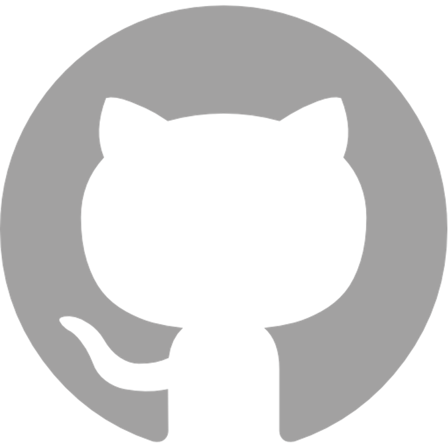

Suggested Tools
We primarily work on collaborative projects where we synthesize existing data to draw larger inferences than any single data set would allow. Because of this, we strongly recommend that each tool used by a team accomplish as many purposes as possible to avoid a project accruing endless “one off” tools that fit a specific purpose but do not accomplish any other tasks. Streamlining your workflow to just a few broadly useful programs also helps reduce the barrier to entry to training new team members and ensures that within team protocols are clear and concise to follow.
The analytical software options available at NCEAS follow directly from this ethos. Although occasionally providing specialty programs (upon request), we have otherwise carefully assembled a powerful lineup of scripted, cross-platform, scalable applications that are well-supported, generate robust results, and permit batch processing. Although these packages require an initial time investment to learn, and may seem intimidating to scientists familiar with only “point-and-click” software, we strongly argue that the long-term payoff is well worth the time investment at the start.
We recommend the following programs, websites, and platforms:
Collaborative Tools
Video Conferencing

Between your in-person meetings at NCEAS (and during them if you have remote participants!) we recommend that you use Zoom. During the COVID-19 pandemic, Zoom became–arguably–the video chatting program and the value of your group’s familiarity with this program should not be underestimated.
Messaging

Your group will be doing a lot of written communication so we recommend creating a Slack community. The advantage of Slack over email is that you can have faster real-time conversations among multiple people without crowding your inbox. Slack also supports attaching files and “pinning” posts to make it easier to find them later. You can also create “channels” for sub-topics within your group (e.g., #paper 1, #analysis, etc.) that will allow your group members to track only the subtopics that are relevant to them. You can download the Slack desktop app here. Another team at NCEAS has created this guide for getting set up on Slack.
Document Sharing

We recommend that you share documents among your group using Google Drive to help you centralize your information. Our team will set up a Shared Google Drive for every working group. This drive can also be used as a staging area for your data during the data collection and exploration phases of your project. This is in part because many people are already at least somewhat familiar with Google Drive. In addition, there is an R package called googledrive that will allow you to directly connect any R scripts to Google Drive files and folders. This can be great for ensuring that all scripts use the same raw data and can be useful for exporting synthesized data products to a given Drive folder.
For the more analytical intensive phase of your project, NCEAS also has several analytical servers that can be used to store large data that need to be processed frequently. We’ll discuss NCEAS’ servers in greater detail further on in the onboarding process.
Computing Tools
Analysis

Our team is most well-versed in R and many data synthesis ends can be accomplished in this language. R’s primary advantage is its amazing user community! R users have developed all kinds of custom functions and packages so even when what you want to do is not supported by an R package on CRAN, chances are that you can find the tools you need online!

We strongly recommend using R through RStudio as the RStudio interface allows several ‘quality of life’ improvements that you will grow to greatly appreciate if you’re not already an RStudio user. RStudio enables an easier connection to Git (see below), facilitates use of the command line, and allows you to generate PDF or HTML reports with embedded code chunks for easy sharing in and outside of your group.

If your group is working with genomes or other large data files, you may find R’s memory limit to be a serious hindrance. If this is the case (or if you prefer to not use R!) we suggest Python as an alternative. Python works better with larger files and is also a well-respected programming language.
Code Storage & Versioning

Git is a great program to use for tracking changes to your code as your project grows and evolves. Git is one type of “version control” software which is specifically built to track changes to code in an informative and useful way. It is analogous to using “track changes” in Microsoft Word but is built in a more seamless way and is purpose-built for working with code. You can install Git following the instructions here.

Similarly to R versus RStudio, we recommend that you create an account with GitHub so that the changes you track with Git can be viewed and interacted with in a straightforward way. GitHub is the industry standard for tracking changes to code and is a great way of making code for a specific project publicly-accessible once you are at a stage where that feels appropriate. We offer an introductory workshop on Git and GitHub that we are happy to offer to your group if that is of interest!